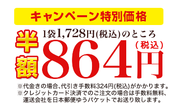

【テレビ放送】5/4(水)、3/9(水)テレビ朝日「羽鳥慎一モーニングショー」で腸内フローラが紹介されました！
【テレビ放送】3/23(水)NHK「これがカラダの新常識若さと美のヒミツ」でビフィズス菌が紹介されました！
善玉菌のエサとなる水溶性食物繊維やオリゴ糖も配合！
ビフィズス菌ヨーグルトの約5倍の善玉菌がとれる「ビフィズス菌・乳酸菌」
今だけ初回お試しキャンペーン中！

当キャンペーン商品をホームページよりご注文いただくと、次回からユーコネクト運営店でご利用いただける
ポイント600ポイント(600円分)を、インターネット会員様へプレゼント致します！
※ご注文時に新規でインターネット会員登録いただいた方、既存会員様も対象です。
※ポイントプレゼントはお一人様1回限りです。当店にてご注文確認後に反映されます。
※当キャンペーン商品は、会員様への10％ポイント還元は対象外です。


乳酸菌とビフィズス菌は、よく「善玉菌」「乳酸菌」として同じもののように扱われていますが、実は、働きが異なる別の菌です。
乳酸菌は乳製品や発酵食品、つけもの、ヒトの小腸・大腸や動物の腸内に存在し、乳酸をつくりますが、ビフィズス菌は主にヒトの大腸や動物の腸内に存在し、乳酸だけでなく抗菌作用のある酢酸をつくります。
また、正常なヒトの腸内では1～10兆のビフィズス菌が住んでいますが、乳酸菌はその1万分の1～100分の１以下。実は、ビフィズス菌と乳酸菌の量にはかなりの差があるのです。
人の腸内では、小腸から大腸にかけ、善玉菌や悪玉菌、日和見菌が日々せめぎあい、腸内フローラ(菌の生態系)を形成しています。
「善玉菌」と呼ばれ混同されている乳酸菌、ビフィズス菌ですが、実は善玉菌の99.98%は「ビフィズス菌」のことなのです。
乳酸菌は、主に体全体の60％の免疫細胞が集まる小腸で正常な環境を保ち、便の水分吸収を調整する大腸では、主にビフィズス菌が正常な環境を保つのに重要な役割を担います。
MACROBIOSのビフィズス菌・乳酸菌は、生きている善玉菌が合わせて100億個。
腸内と同じように9:1の割合で、ビフィズス菌と乳酸菌をバランス良く配合しています。
国や世代によっても腸内フローラの割合は異なりますが、MACROBIOSのビフィズス菌・乳酸菌は、日本人の成人に多い「ロンガム種」と乳児に多い(年齢を重ねるごとに少なくなる)「ブレーべ種」を採用しています。
また、動物の腸内にすんでいるビフィズス菌でなく健康な乳児から発見されたヒトの腸にすむ種類のビフィズス菌で、元々ヒトの体内にある善玉菌なので、安心してお飲みいただけます。

さらに、ビフィズス菌の活動をサポートするため、善玉菌の助っ人となり、活躍しやすい環境をつくる「乳酸菌(ガッセリ菌)」や、善玉菌のえさ、ビフィズス菌の栄養源となる「ミルクオリゴ糖」、水溶性食物繊維の「難消化性デキストリン」、また出産後の初乳に多く含まれ、腸内では悪玉菌の増殖を抑える「ラクトフェリン」をプラス配合！
3つの成分が、善玉菌の活躍を促します。
まで


当キャンペーン商品をホームページよりご注文いただくと、次回からユーコネクト運営店でご利用いただける
ポイント600ポイント(600円分)を、インターネット会員様へプレゼント致します！
※ご注文時に新規でインターネット会員登録いただいた方、既存会員様も対象です。
※ポイントプレゼントはお一人様1回限りです。当店にてご注文確認後に反映されます。
※当キャンペーン商品は、会員様への10％ポイント還元は対象外です。


乳酸菌とビフィズス菌は酸や熱に弱いため、その大半は胃や十二指腸で死滅してしまうと言われています。
MACROBIOSのビフィズス菌・乳酸菌は胃酸に強い耐酸性カプセルを採用しているため、胃酸や胆汁に弱い生菌を守り、腸まで届けます。
＊死滅した菌でも、善玉菌のえさとなるため他の善玉菌を増やすと言われていますが、生菌は腸内にしばらく留まって働くため、腸内を弱酸性に保ち、腸内細菌のバランスを正常化する働きを行うと言われています。


腸内フローラ(菌の生態系)は理想的なバランス(善玉菌：悪玉菌：日和見菌が約2：1：7)を保つのが大事だといわれていますが、腸内フローラは、食生活やストレス、また老化などにより「悪玉菌」が優勢となりやすく、悪玉菌優位となると下痢や便秘、また病気への抵抗力の低下など様々な悪影響が出てきます。
いつもせめぎあう腸内細菌を善玉菌優勢に保つためには、日々意識してビフィズス菌、乳酸菌を摂ることが大切です。

-
トイレに入るのが嫌と言われて・・・
昔からお腹の調子が良くないことに悩んではいたのですが、娘に「お父さんの後にトイレに入るのは嫌！」と言われたのがきっかけで、ついにビフィズス菌を飲み始めるのを決心！今ではなんとも言われなくなり、ほっとしています(笑)
40代男性
-
ヨーグルトだけでは足りなかったよう
ビフィズス菌と乳酸菌は今まで同じものだとばかり思っていましたが、全然違うんですね！毎日ヨーグルトを食べていましたが、ヨーグルトだけではビフィズス菌までは摂れていなかったようです。
50代女性
-
やっと合うものが見つかりました
乳酸菌の製品を色々試していて、今まではなかなか実感がなかったのですが今回は、腸が動く感じがしてびっくり！やっとお腹に届いたのかも？しばらく続けてみます。
30代女性
まで
当キャンペーン商品をホームページよりご注文いただくと、次回からユーコネクト運営店でご利用いただける
ポイント600ポイント(600円分)を、インターネット会員様へプレゼント致します！
※ご注文時に新規でインターネット会員登録いただいた方、既存会員様も対象です。
※ポイントプレゼントはお一人様1回限りです。当店にてご注文確認後に反映されます。
※当キャンペーン商品は、会員様への10％ポイント還元は対象外です。

【受付】24時間ご注文可能

インターネットの場合、ご注文時の会員登録(無料)で、定期便を除く通常商品ご注文時に、商品代金(税抜き)の10％ポイント還元！
1ポイント=1円で、次回ご注文時にご利用いただけます。
お支払い方法
代金引換またはクレジットカード決済がお選びいただけます。
代金引換
商品到着時に、担当のドライバーへお支払いください。
※到着時にクレジットカードでもお支払い可能な代金引換サービス(e-コレクト)をご希望の方は、ご注文時、備考欄に「佐川急便での配達希望」の旨をご記入ください。
クレジットカード下記マークのあるカードがご利用いただけます。
メールが届きます
ご注文後、ご注文時にご入力頂い たメールアドレスへ、ご注文内容の確認メールが自動配信されます。
到着までに、自動配信、当店注文確認時、発送準備完了時の計３通メールが送られます。
発送手続き・商品の到着
営業日12時までのご注文で最短当日に出荷し、通常１～３日程度で到着いたします。
運送会社は基本的に佐川急便、沖縄・離島・中継料金のかかる一部地域は日本郵便を利用してお送りいたします。
お試し用商品等でクレジットカード決済の場合は、日本郵便(ゆうパケット)でお送りさせていただきます。
※恐れ入りますが天候や交通混雑状況により、若干到着が遅れる場合がございます。
※天候や物流増加などの配送状況により、運送会社を変更してお送りさせていただく場合がございます。

【受付】平日9時半～18時半
ご注文専用フリーダイヤル
 0120-799-100
0120-799-100
「ご注文の商品名」と「個数」をお伝えください。
※電話・FAXでのご注文の場合は、ポイント取得や利用が出来ません。
お支払い方法
代金引換またはクレジットカード決済がお選びいただけます。
代金引換
商品到着時に、担当のドライバーへお支払いください。
※到着時にクレジットカードでもお支払い可能な代金引換サービス(e-コレクト)をご希望の方は、ご注文時、備考欄に「佐川急便での配達希望」の旨をご記入ください。
クレジットカード下記マークのあるカードがご利用いただけます。
発送手続き・商品の到着
営業日12時までのご注文で最短当日に出荷し、通常１～３日程度で到着いたします。
運送会社は基本的に佐川急便、沖縄・離島・中継料金のかかる一部地域は日本郵便を利用してお送りいたします。
お試し用商品等でクレジットカード決済の場合は、日本郵便(ゆうパケット)でお送りさせていただきます。
※恐れ入りますが天候や交通混雑状況により、若干到着が遅れる場合がございます。
※天候や物流増加などの配送状況により、運送会社を変更してお送りさせていただく場合がございます。

【受付】24時間ご注文可能
FAXご注文専用ダイヤル
 092-401-0245
092-401-0245
上記よりダウンロードして印刷、ご記入いただいたのち、FAXでお送りください。
※電話・FAXでのご注文の場合は、ポイント取得や利用が出来ません。
お支払い方法
代金引換でお送り致します。
代金引換
商品到着時に、担当のドライバーへお支払いください。
※到着時にクレジットカードでもお支払い可能な代金引換サービス(e-コレクト)をご希望の方は、ご注文時、備考欄に「佐川急便での配達希望」の旨をご記入ください。
発送手続き・商品の到着
営業日12時までのご注文で最短当日に出荷し、通常１～３日程度で到着いたします。
運送会社は基本的に佐川急便、沖縄・離島・中継料金のかかる一部地域は日本郵便を利用してお送りいたします。
お試し用商品等でクレジットカード決済の場合は、日本郵便(ゆうパケット)でお送りさせていただきます。
※恐れ入りますが天候や交通混雑状況により、若干到着が遅れる場合がございます。
※天候や物流増加などの配送状況により、運送会社を変更してお送りさせていただく場合がございます。
まで
当キャンペーン商品をホームページよりご注文いただくと、次回からユーコネクト運営店でご利用いただける
ポイント600ポイント(600円分)を、インターネット会員様へプレゼント致します！
※ご注文時に新規でインターネット会員登録いただいた方、既存会員様も対象です。
※ポイントプレゼントはお一人様1回限りです。当店にてご注文確認後に反映されます。
※当キャンペーン商品は、会員様への10％ポイント還元は対象外です。
▼以下の商品はキャンペーン(600ポイント)対象外です▼
＊インターネット会員様へ、ユーコネクト運営店でご利用いただけるポイント10%還元！
税抜き商品代金の10%還元され、1ポイント=1円で次回からご利用いただけます。
お試し用で「代引き」の場合のみ、代引き手数料別324円(税込)(※クレジットカード決済の場合は手数料無料)、その他ご注文は送料無料・代引手数料無料でお届けします!